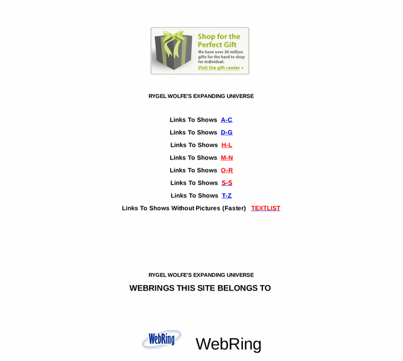

Previewing: Rygel Wolfe's Expanding Universe Previewing: Rygel Wolfe's Expanding Universe 
Use the left/right red arrow controls to navigate through this ring - Click the preview image to visit the member site.

I originally created this site to help me with my sci-fi collection cataloging. Most pages now contain links to what I consider to be some of the best sources of information for sci-fi and fantasy television series. I hope you enjoy where this leads you.
Rygel Wolfe's Expanding Universe owned by:
 rygelwolfe rygelwolfe
A member of the original webring since 12/15/2004.
|
|